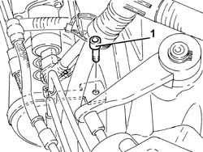
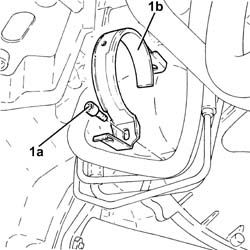
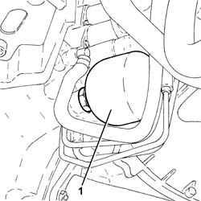

2127C44 pressure accumulator on hydraulic actuator unit - r r
- Path
- Procedures > 21 GEARBOX > 2127 ELECTRO-HYDRAULIC SELECTION. GEARBOX EXTERNAL. CONTROLS > 2127C hydraulic gear selection system > 2127C44 pressure accumulator on hydraulic actuator unit - r r
- Kind
- repair procedure (removal / refitting; the operation number is the code)
- Applies to
- engines: 3.2 V6; all production periods
- Interactive page
- https://sloeber94.github.io/elrnDB-a156/en/#/3237975
Applies to: engines: 3.2 V6; all production periods; only with equipment: Smart gearbox
 Removing
Removing
 Refitting
RefittingPosition the vehicle on the ramp
Connect the Examiner diagnostic equipment.
Select 'Alf 156 Selespeed' on the Examiner.
Select 'Control Unit Test' on the Examiner and select the 'Marelli Selespeed Automatic Transmission'.
Press 'Active Diagnosis' on the Examiner and select 'Accumulator depressurizing'.
Continue with the procedure on the Examiner.
Proceed with removal 5530B10 battery - r+r .
Proceed with removal 5530B52 Battery DRIP TRAY/SUPPORT - R.R. .
1. Undo the upper bolt fixing the pressure accumulator collar to the gearbox.

Applies to: engines: 3.2 V6; all production periods; only with equipment: Smart gearbox
Proceed with removal 7055B54 under-engine guard - r r .
1. Undo the lower bolt (1a) and remove the collar (1b) fixing the pressure accumulator to the gearbox.

Applies to: engines: 3.2 V6; all production periods; only with equipment: Smart gearbox
1. Undo and remove the pressure accumulator from the gearbox electro-hydraulic selection and actuation unit.

Applies to: engines: 3.2 V6; all production periods; only with equipment: Smart gearbox
Refitting
RemovingRefit the pressure accumulator to the gearbox hydraulic selection actuation unit and tighten it.
Place the collar fastening the pressure accumulator back in its housing and secure it using the bolts.
Proceed with refitting - 0010T47 hydraulic system fluid for gearbox with hydraulic selection check level and top up if necessary .
Proceed with refitting - 0010T48 hydraulic system for gearbox with hydraulic selection bleed air .
Proceed with refitting 5530B52 Battery DRIP TRAY/SUPPORT - R.R. .
Proceed with refitting 5530B10 battery - r+r .
Proceed with refitting 7055B54 under-engine guard - r r .
Remove the car from the ramps.